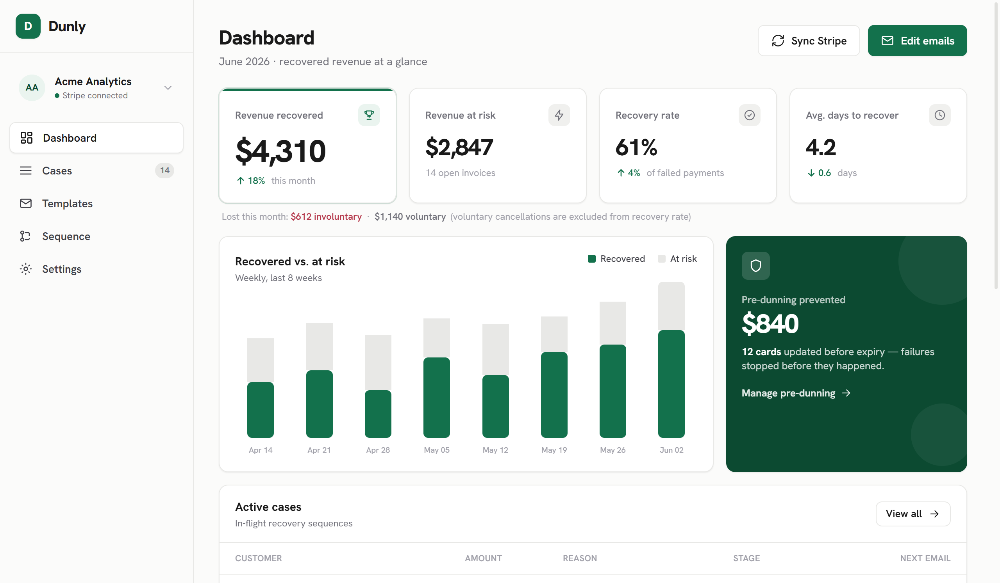

sample data
Billing SaaS · Backend
Dunly
Automated failed-payment recovery for Stripe subscription businesses. Signature-verified webhooks feed a Postgres job queue, and a six-state case machine walks every failed invoice back to paid.
Express
PostgreSQL
Stripe
Resend